1. Objective
The goal of this lab is to implement a closed-loop PID orientation controller using the ICM-20948 IMU's onboard Digital Motion Processor (DMP) for yaw feedback. The robot must hold a target heading against external perturbations, with the implementation progressing through Kp tuning, derivative kick suppression, low-pass filtering, and integral anti-windup protection.
2. Prelab: Bluetooth Architecture & Workflow
To efficiently tune a PID controller, we need the ability to update gains and setpoints dynamically while the PID was active. To improve our testing workflow, I separated the "PID Run" command from the "Data Gathering" phase into distinct Jupyter Notebook cells. This modularity allowed me to initiate the controller, physically interact with the robot, and then trigger the data pull separately.
Below is the Python function used to dynamically pack and transmit the tuning parameters:
def set_gains(kp=None, ki=None, kd=None, sp=None, wu=None):
global Kp, Ki, Kd
parts = []
if kp is not None: parts.append(f"Kp:{kp}"); Kp = kp
if ki is not None: parts.append(f"Ki:{ki}"); Ki = ki
if kd is not None: parts.append(f"Kd:{kd}"); Kd = kd
if sp is not None: parts.append(f"SP:{sp}")
if wu is not None: parts.append(f"WU:{int(wu)}")
if not parts:
print("No gains specified.")
return
cmd = "|".join(parts)
ble.send_command(CommandTypes.SET_GAINS, cmd)
print(f"Gains set — {cmd}")
time.sleep(0.2)
# Example Usage:
# set_gains(kp=5, ki=1.0, kd=0.4, sp=0)
# set_gains(wu=1)3. Sensor: DMP Yaw via Quaternion Fusion
Rather than manually integrating raw gyroscope data — which accumulates bias drift — the ICM-20948's onboard Digital Motion Processor (DMP) was used. The DMP fuses sensor data internally to output highly stable quaternions.
The gyro range was left at its default ±2000°/s. Data from the tuning plots showed the robot occasionally hitting rotational velocities of 800°/s during violent recoveries, meaning this wide range was strictly necessary to prevent clipping. The main control loop runs at a highly stable average of 75 Hz~.
Below are the C++ helper functions used to initialize and read the DMP:
bool init_dmp() {
myICM.begin(Wire, AD0_VAL);
if (myICM.status != ICM_20948_Stat_Ok) return false;
bool success = true;
success &= (myICM.initializeDMP() == ICM_20948_Stat_Ok);
success &= (myICM.enableDMPSensor(INV_ICM20948_SENSOR_GAME_ROTATION_VECTOR) == ICM_20948_Stat_Ok);
success &= (myICM.setDMPODRrate(DMP_ODR_Reg_Quat6, 0) == ICM_20948_Stat_Ok);
success &= (myICM.enableFIFO() == ICM_20948_Stat_Ok);
success &= (myICM.enableDMP() == ICM_20948_Stat_Ok);
success &= (myICM.resetDMP() == ICM_20948_Stat_Ok);
success &= (myICM.resetFIFO() == ICM_20948_Stat_Ok);
return success;
}
bool read_dmp_yaw() {
icm_20948_DMP_data_t data;
bool got_data = false;
do {
myICM.readDMPdataFromFIFO(&data);
if (myICM.status == ICM_20948_Stat_Ok || myICM.status == ICM_20948_Stat_FIFOMoreDataAvail) {
if ((data.header & DMP_header_bitmap_Quat6) > 0) {
double q1 = ((double)data.Quat6.Data.Q1) / 1073741824.0;
double q2 = ((double)data.Quat6.Data.Q2) / 1073741824.0;
double q3 = ((double)data.Quat6.Data.Q3) / 1073741824.0;
double q0 = sqrt(max(0.0, 1.0 - q1*q1 - q2*q2 - q3*q3));
double raw_yaw = atan2(2.0*(q0*q3 + q1*q2), 1.0 - 2.0*(q2*q2 + q3*q3));
yaw_dmp = -(float)(raw_yaw * 180.0 / M_PI);
got_data = true;
}
}
} while (myICM.status == ICM_20948_Stat_FIFOMoreDataAvail);
return got_data;
}4. PID Tuning & Data Visualization
Building upon the foundation from the previous lab, I ported our initial PID control structure and adapted it for orientation control. The tuning goal was a critically damped system with fast response times and zero steady-state error. To accurately debug the system, the telemetry graphs plot five distinct parameters over time:
- Measured Yaw (θ): The physical angle of the robot.
- Setpoint: The target angle (dashed).
- Controller Effort (PWM): Raw motor command output (−255 to 255).
- Angular Velocity (ω): Rotational speed in degrees per second.
- System Error: Mathematical difference between Setpoint and Yaw.
We iterated through Kp values of 2, 4, and 6. A Kp of 6 induced aggressive oscillations, so we settled on Kp = 5.0. To brake the resulting rotational momentum, a derivative term of Kd = 0.3 was introduced. Finally, a small integral term Ki = 0.15 was added to overcome static floor friction.
Video 1: Robot kicked from multiple directions — aggressively snaps back to the yaw setpoint
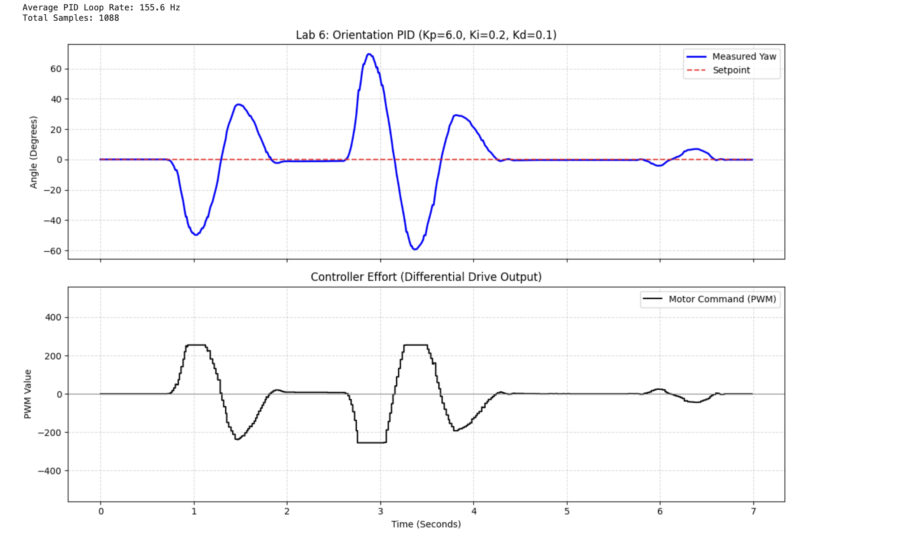
Figure 1: Kp=6 — Aggressive oscillations induced; too high. Final value settled at Kp=5.0.
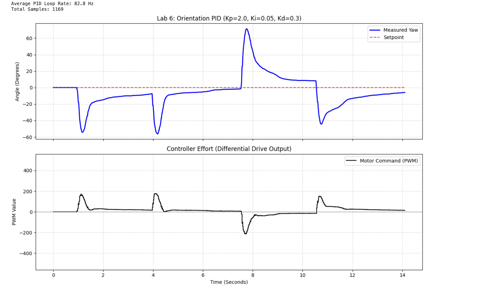
Figure 2: Kp=2 — Underpowered response, yaw barely converges and holds a large steady-state error.
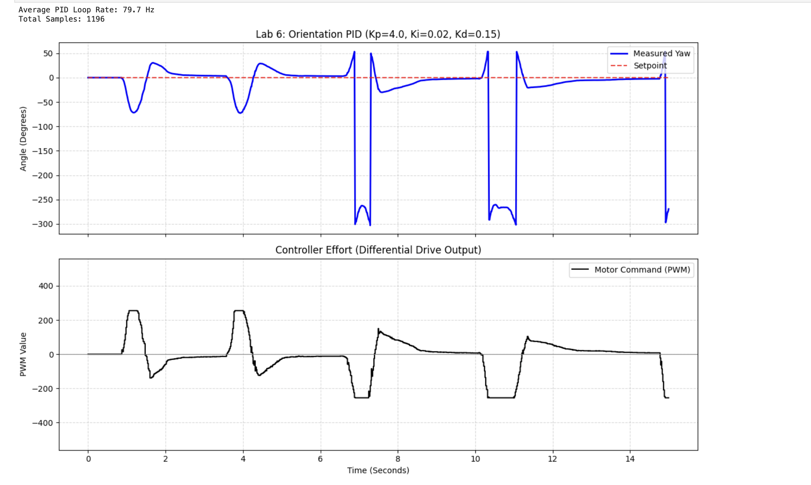
Figure 3: Kp=4 — Faster convergence and reduced error. A good midpoint but still underdamped.
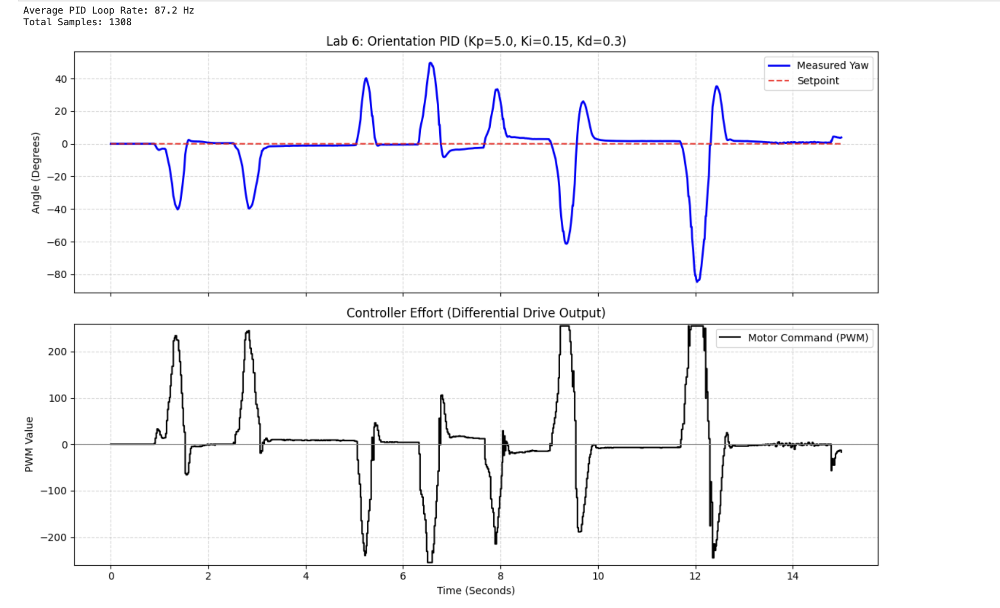
Figure 4: Kp=5.0, Kd=0.3, Ki=0.15 with LPF (α=0.3) — Angular Velocity vs Time (Green). Sharp velocity spike during perturbation, fast recovery.
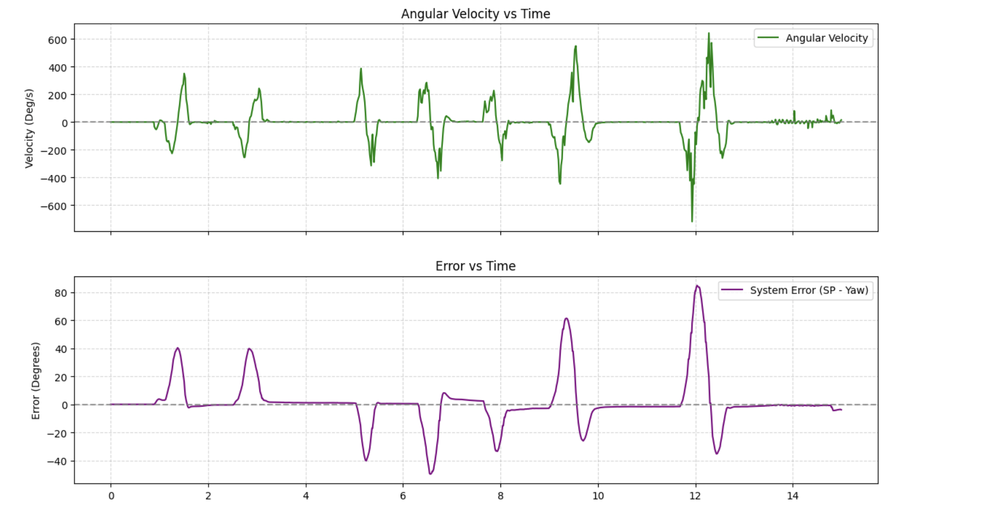
Figure 5: Kp=5.0, Kd=0.3, Ki=0.15 with LPF (α=0.3) — Error (SP − Yaw) vs Time (Purple). High initial error resolves cleanly to zero.
5. Addressing Derivative Kick
If a setpoint is changed mid-run via Bluetooth, the calculated error instantly spikes. If the D-term is calculated as d(Error)/dt, this vertical spike causes a mathematically massive PWM command, jerking the robot violently.
To prevent this, the derivative was calculated based on the Measured Yaw rather than the Error. Because physical objects cannot teleport, the change in yaw is always smooth. A low-pass filter (α = 0.3) was also applied to prevent IMU noise from jittering the motors. This weights the newest reading at 30% and the historical average at 70%.
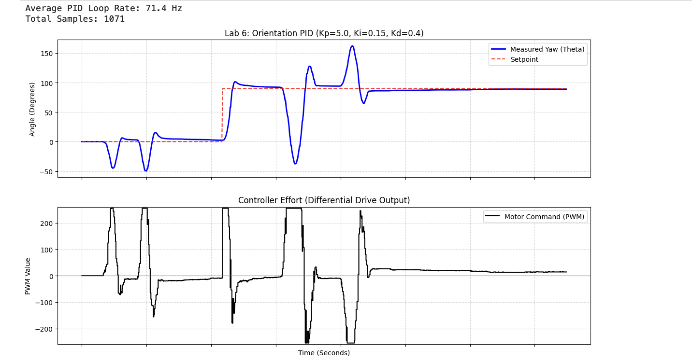
Figure 6: Derivative on Error — Violent PWM spike during setpoint change causes jerky rotation.
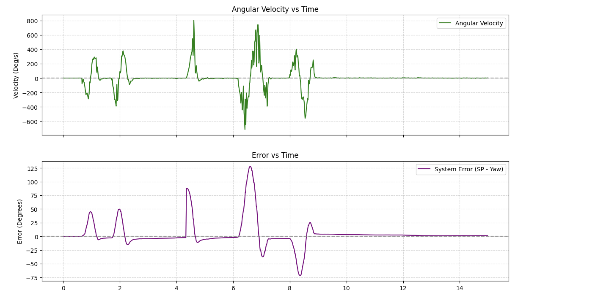
Figure 7: Derivative on Measurement (LPF α=0.3) — Smooth output regardless of setpoint change. Final configuration.
// Derivative on Measurement & Angle Wrapping
float delta_yaw = current_yaw_rel - prev_yaw;
while (delta_yaw > 180.0f) delta_yaw -= 360.0f;
while (delta_yaw < -180.0f) delta_yaw += 360.0f;
float raw_d = (dt_s > 0) ? -(delta_yaw) / dt_s : 0.0f;
// Low-Pass Filter
filtered_d = 0.3f * raw_d + 0.7f * filtered_d;
float d_term = Kd * filtered_d;6. (5000-Level) Integral Anti-Windup
To ensure the controller operates independently of floor surface friction, an anti-windup clamp was implemented. If the robot's wheels stall, the I-term will build to infinity, causing a false equilibrium where the wound-up positive memory completely cancels out the negative P-term brakes upon release.
// Integral Accumulation & Anti-Windup Clamp
integral += error * dt_s;
if (windup_on) {
integral = constrain(integral, -WINDUP_LIMIT, WINDUP_LIMIT);
}This was proven using a hostage test with a highly aggressive Ki = 1.0:
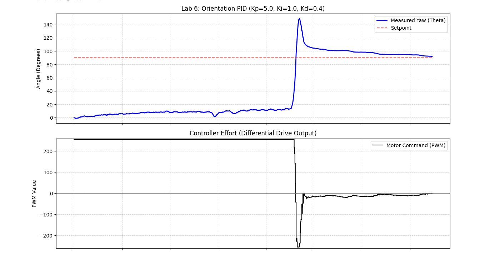
Figure 8a: WU=0 — Yaw vs Time. Controller unable to return to setpoint after release.
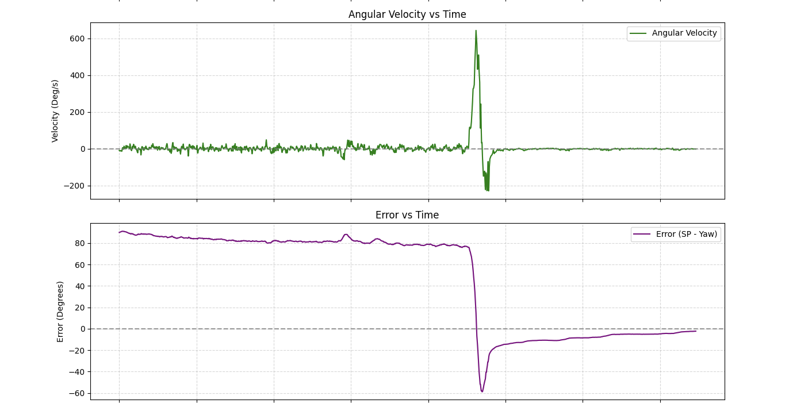
Figure 8b: WU=0 — Angular velocity & error during hold. Integrator winds up unchecked.
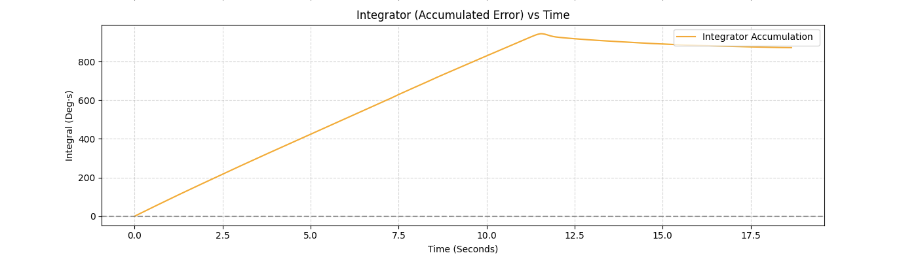
Figure 8c: WU=0 — Integrator (accumulated error) vs Time.
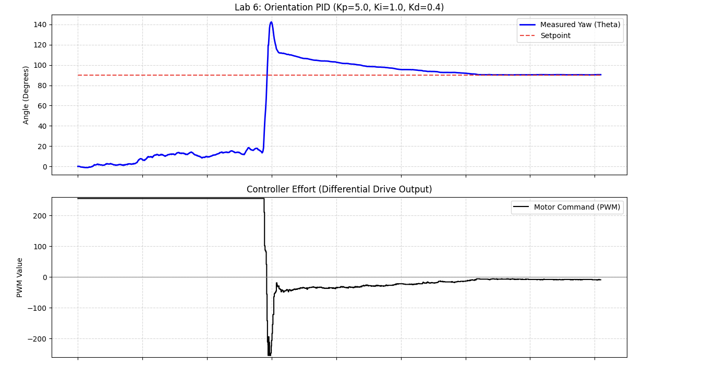
Figure 9a: WU=1 — Yaw vs Time. Robot snaps cleanly back to 90° setpoint after release.
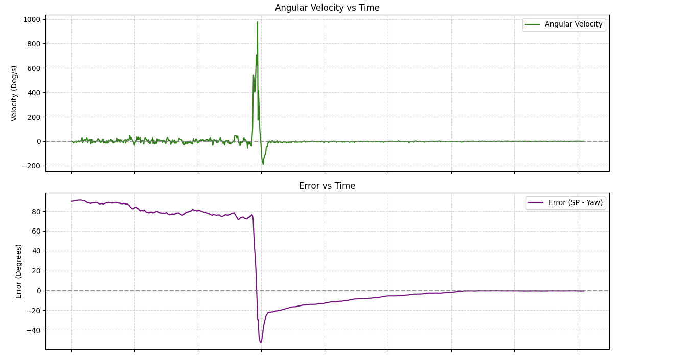
Figure 9b: WU=1 — Angular velocity & error under protection. Clamped I-term keeps the response controlled.
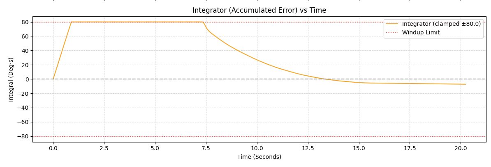
Figure 9c: WU=1 — Integrator plateaus at the dynamic ceiling (80.0/Ki). P and D terms easily overpower it; robot recovers perfectly.
AI usage: AI was used to generate this website and solve bugs.